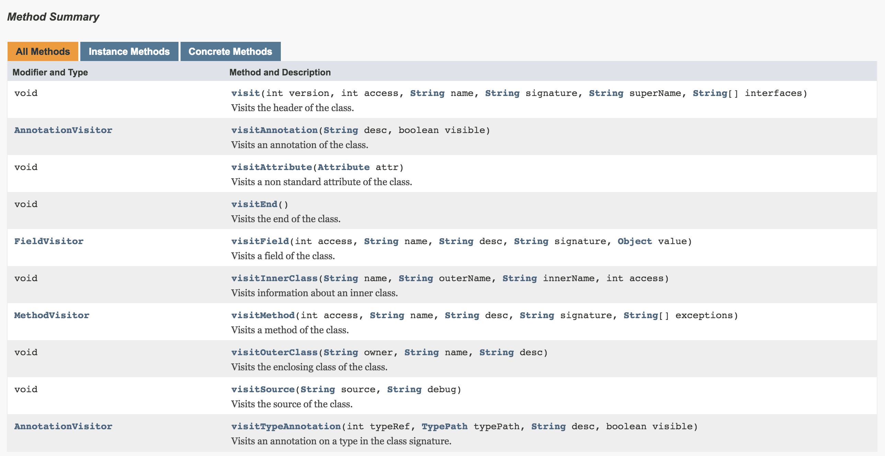
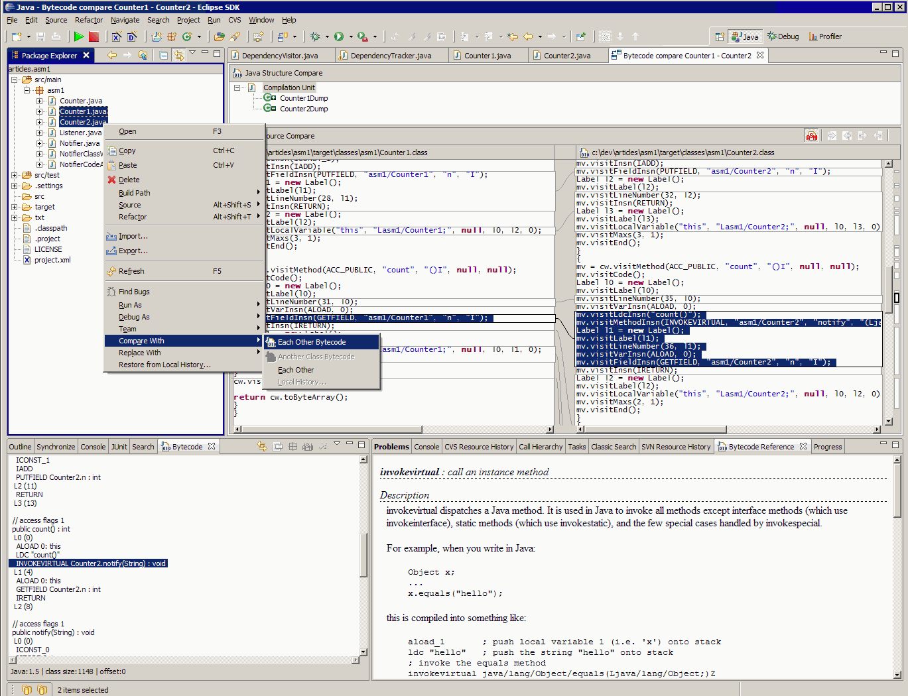

前言
不知道为啥，公司刮起一阵AOP编程的风暴，Java体系很老的技术竟然在Android里面迎来了新生。可能是因为App越做越大需要用到？ASM是AOP编程的一种实现方式，它可以用编程的方法改变类字节码。一般ASM主要用来做AOP，和mock测试。当然了，你要是用ASM来直接写代码，写class，谁也拉不长你，吹不扁你。
AOP
具体的概念就不多说了，网上多的是。说下我自己的理解。现在我们接触到的编程模式大概分为，面向过程，面向对象。AOP是面向切面，可以看做是特定功能对面向对象编程的一种补充。此外还有结构化编程（面向对象），和函数式编程。各有好处。
前面说了，AOP是面向对象的补充。
讲一个故事
既然是面向对象，对象是什么？一个个封装好的个体，桌子，板凳，大舅二舅都是对象，这些封装好的个体还有各自的继承关系，他大舅他二舅都是他舅，高桌子低板凳都是木头。对象中可能还持有别的对象，就形成了关联关系。这些继承和关联关系构成了真实世界。真实世界映射到软件中，就是一个面向对象的软件系统。大舅二舅家都有桌子板凳，桌子板凳都会脏，用之前要擦一下。
问题来了，刚买回来桌子板凳的时候，都是新的干净的，没考虑到它会脏啊？这个时候，传统的做法就是让舅舅（大舅二舅的父类）用桌子板凳的时候，要擦一下。但是这个时候你软件系统里可能还有七大姑八大姨，你可能要想了，那就抽象出一个亲戚类，然后写一个坐板凳的方法，里面写上擦板凳，然后让所有亲戚去实现这个坐板凳方法，再在实现中调用父类的坐板凳。这样下去：越来越复杂。
这时候，AOP就出现了，它犹如上帝之手，用直接传功，灵魂注入的方式，让所有亲戚坐板凳之前，都要擦板凳。你的亲戚们什么都没改变，莫名其妙的坐之前都会先擦一下。
实际的应用场景
当然了，我们大部分用AOP的场景都不是用来做业务功能的（坐板凳属于业务功能）。
几个典型的AOP场景
- 打Log
- 性能监控
- 后台服务器的数据库连接和事务管理。解释：一个请求过来，被AOP拦截后，然后打开一个sql的事务。在返回的时候，事务提交或者回滚。这样做的好处是，所有的请求都支持了事务，不用每次都写什么beginTransaction，commit。
- 安全性检查
- 埋点打桩
ASM
惯例不废话，先分享几篇好的博客
字节码及ASM使用
AOP 的利器：ASM 3.0 介绍
ASM Bytecode Framework探索与使用
JVM指令
Introduction to the ASM 2.0 Bytecode Framework(官方)
ASM 4.0 A Java bytecode engineering library(官方)
深入字节码 – 使用 ASM 实现 AOP(系列文章，个人感觉很好！)
ASM只有百十来kb，用法却是千变万化，毕竟是可以直接改字节的东东。
ASM解析字节码采用访问者模式，它把对字节码的访问解析成很多事件（node），然后顺序的交给访问者（visitor），我们只需要处理visitor给我们提供的回调就可以了。这是修改一个现有类的方式。如果想新建一个类class，则需要你按照它提供的顺序做按部就班的做一些事情，新建比修改难的多，这里的难体现在对字节码的了解程度上。

上面的时序图很重要，它完全说明了asm解析class字节码的流程。
Api
ClassReader和ClassVisitor。
ClassReader
顾名思义，这玩意可以读取一个class文件。看下它的api
ClassReader(byte[] b)
ClassReader(byte[] b, int off, int len)
ClassReader(InputStream is)
ClassReader(String name)
很明显了，新建这玩意需要字节数组，或者流和文件名。那么就是一个类的字节码文件的字节数组或者流和文件名对吗？
回看上面的时序图，解析是从accept开始的，接收的参数是一个ClassVisitor，这就是典型的访问者模式了。回看上面的时序图，整个访问流程也是accept方法开始走的，从时序图一路看下来，都是以访问者模式去调用了ClassVisitor中的方法。ClassVisitor中又细化了几个子Visitor，分别是annotationvisitor，fieldvisitor，methodvisitor。
ClassReader就不深究了，里面的方法也不多，它最大的意义在于读取字节码，然后启动整个流程，后面怎样处理就交给了ClassVisitor
ClassVisitor
真正能访问各种visit的东西。它以回调的方式给于我们处理字节码各个环节的机会。ClassReader以访问者模式去调用ClassVisitor，而ClassVisitor内部是以职责链模式来处理的(还记得Android中的touch事件传递吗？return true|false控制整个流程)。意思就是说，一个ClassVisitor可以持有另一个ClassVisitor对象，一路持有下去，而访问时，也会逐一挨个访问。ASM给我们内置了几个ClassVisitor，都是它的子类，需要特别关注一下的是ClassWriter，它如果再ClassVisitor职责链中的一环，在accept完成后，ClassWriter可以调用toByteArray获取被修改后的字节码字节数组，可以随意的处理它。看下ClassVisitor的方法

全是以visit开头的方法，需要重点关注的是：visit(), visitAnnotation，visitField，visitMethod，visitEnd。
见名知意，并且api上给出了每个方法的解释。重点说下visit，api上解释是这样的，Visits the header of the class.那么什么是一个class的header呢？官方说明的开头就给出了解释，内容太多就不复制过来了。大概就是说，类的声明信息，包括集成，实现，泛型等等。这个方法也是访问一个类最首先访问到的方法！别的方法就不解释了，开头介绍的深入字节码 – 使用 ASM 实现 AOP(系列文章，个人感觉很好！)里面有详细描述。
注意！ClassVisitor是处理类级别的回调，不涉及到具体的东西。可以看到，visitAnnotation，visitField，visitMethod，这三个方法都是带返回值的！也就是我们开头说的子visit，用于处理一些更细节的东西。比如，visitMethod方法的返回值是一个MethodVisitor对象，这个MethodVisitor对象就是用于处理这个方法更细节的东西，比如：注解，代码，泛型等等。我们可以创建自己的MethodVisitor，处理一些自己的东西，然后返回。如果什么也不做，直接super.visitMethod(access, name, desc, signature, exceptions)。如果你return null。对不起，相当于略过了这个方法。asm不会扫描这个方法。
请注意：这几个子visit和ClassVisitor并无继承关系。
在ClassVisitor的方法里面，你就可以随便弄了，我们一般的开发模式是生成目标类的子类后，扩展你需要的方法。在调用的时候，使用反射取出强化过的类对象，如果有，返回回去使用。当然你也可以直接改目标类的class。
一般情况下，都是修改类的class，进行一下插桩操作。
总结流程
其实ASM只是一个很小的工具包，大致的调用概念就是上面说的。ClassReader加载字节码文件–>accept方法启动访问者模式–>把class文件拆分成各种visit事件，把拆分的事件循环遍历ClassVisitor中的各种visit方法（ClassVisitor类采用职责链循环递归）–>在ClassVisitor中如遇到visitField，visitMethod等，才用更细化的FieldVisitor等等继续visit–>整个流程完毕
如果没有看文章头部推荐的博客，第一次接触asm，可能说完上面的，还是对流程有点模糊，这时候必须要上代码。
ClassReader遍历ClassVisitor的伪代码
首先先看一个类
|
|
使用ClassReader加载该类的字节码文件后，会把字节码拆分成各种visit事件，它有多少事件呢？
|
|
该代码由工具生成，文章结束有介绍
以上是该类会触发的所有事件，如果想用asm代码直接生成class文件可以用上面代码生成Person.class，下面ClassReader的accept伪代码。下面主要展示Method调用过程
|
|
就是这样，整个Class文件被accept遍历了一遍，再看下ClassVistor的visitMethod
|
|
上面代码的cv也是一个ClassVistor，是由创建一个ClassVisitor的时候传入的，这样就形成了职责链，一路调用下去。注意！职责链是有顺序的，采用了堆栈模型，被accept的ClassVisitor A最先调用，然后调用A持有的B。重点来了请注意，我们应该把ClassWriter放在调用链的最后一环才能得到正确的class文件。
源代码跟上面的伪代码实现差不多，再回到开头我们说的，如果想忽略哪个方法，可以在自己实现的ClassVisitor里面的visitMethod方法里面返回null，上面的accept就给出了为什么能忽略该方法的原因。因为返回了null，accpte内部代码没有拿到MethodVisitor，就不会去解析该方法
再来看MethodVisitor的visitCode
|
|
MethodVisitor中的其他visit方法也都是这么实现的，调用了内部持有的MethodVisitor。所以！MethodVisitor也是一条职责链，同样的FieldVisitor，AnnocationVisitor也是。
到了这里，整个ClassReader加载字节码流程有没有更清楚一点了呢？
现在要用起来了，老规矩，上代码
|
|
上面的代码很简单，创建一个ClassReader，读取类com.kahn.test.asm.bean.Person的字节码，然后开始accept，传入一个我们自己的PrintVisitor。来看下PrintVisitor
|
|
很简单的ClassVisitor子类，这里我没有使用ClassVisitor(int api, ClassVisitor cv)这个构造函数，也就是说我们这个PrintVisitor内部没有再持有一个ClassVisitor对象，它是职责链顶端也是末端，就它自己。
这里简单的复写了它的几个方法，全部是调用的父类的，调用之前打印了一下日志。
运行代码后，结果为
|
|
可以看到ClassReader扫描了这个类的基本信息，还能看到，它先访问了visit方法，然后是visitField，然后是visitMethod(先输出了name，age，后输出
这里都是直接调用的super.xxxx 继续使用父类的。父类的(ClassVisitor的)方法，我们刚刚已经看过了，都是调用内部持有的ClassVisitor，这里我们没有持有内部的ClassVisitor，所以这里的super.xxxx其实什么也做。
同理，调用在visitMethod方法中这样写到： return super.visitMethod(access, name, desc, signature, exceptions); 那么父类内部的ClassVisitor为空，这时我们能猜到，其实这边返回的是一个null。也就是说：在本例中，accept并不会去扫描方法或者字段等等的具体信息，因为它们对应的方法返回了一个null。这也是ASM延迟加载机制，只有在被用到，才会扫描
好了，这么做貌似没什么用，我们来加强一下例子。
|
|
在ClassVisitor链条上加了一个ClassWriter，把这个ClassWriter对象赋值给了PrintVisitor，在accept结束后，使用cw.toByteArray()得到新的字节码数组，写成本地文件存储
看下PrintVisitor
|
|
我改造了一下visitMethod方法，如果遍历到的这个方法名是getName，我就自己实现一个MethodVisitor返回，如果是别的方法，使用父类的super.visitMethod返回。请注意！这回这里的super.visitMethod不再是毫无用处了，因为PrintVisitor不再是职责链的最后一环，它内部还持有一个ClassWriter，这里调用super.visitMethod其实是调用了ClassWriter的visitMethod，ClassWriter的visit方法全是往内存里圧栈的操作，这很重要！以为有了ClassWriter我们才能输出有效的class文件
看下我们自己实现的MethodVisitor，在MethodVisitor构造函数中传入了super.visitMethod返回的MethodVisitor，OK，MethodVisitor也形成了职责链，我们自己的MethodVisitor再调用super.xxx方法时，其实是调用了内部持有的MethodVisitor。这个内部持有的MethodVisitor其实也是刚刚通过super.visitMethod生成的。它是什么呢？它是ClassWriter的visitMethod方法生成的一个MethodWriter对象，这个MethodWriter是MethodVisitor的子类。
回到我们自己的匿名内部MethodVisitor。里面只实现了两个方法，visitCode和visitMaxs。visitCode是刚进入到代码中触发的，而visitMaxs则表示该方法需要的内存堆栈。
先看下visitCode，里面先调用了super.visitCode();这个是必须的！因为要调用职责链下层，MethodWriter的visitCode。紧跟着调用了三句代码，全都是MethodVisitor自己的未被覆盖的代码，这三句代码也同样都会调用MethodWriter的相应方法。
我们知道visitCode是进入代码的意思。那么后面三句是什么意思呢？不要慌，如果看过顶部推荐的博客就已经知道了，没看也没关系，楼主重复造下轮子。
|
|
这三句的意思，1，获取System的静态变量out。2，往堆栈中压入一个字符串”insert ok!”。3，调用PrintStream的println方法，联系上下文，现在堆栈中第一位是一个PrintStream的变量out，第二位是一个字符串”insert ok!”，那么这里调用PrintStream的println方法其实就相当于调用System.out.println(“insert ok!”)。
又是一波重点来袭！因为这些方法都是调用的MethodWriter的相应方法，MethodWriter是什么？前面刚刚讲过，要注意！MethodWriter会把这些操作压入堆栈，那么经过刚刚那么一折腾，其实就是，在gatName方法刚入代码后，压入一套System.out.println(“insert ok!”)的字节码指令。
那么重写的visitMaxs是什么意思？super.visitMaxs(2, 1)？因为你这个方法本来的字节码应该调用visitMaxs(1, 1)，如果不重写其实默认的就是visitMaxs(1, 1)，但是我们修改了字节码，多在堆栈里压了一些东西，所以要改下（测试发现，没重写也能正常运行，可能是ASM有什么特殊处理吧）。
ok！我们重新运行一下。用JD-GUI打开生成的Person.class文件（不要打开原始的，要打开我们新生成的）。可以看到getName里面多了一句System.out.println(“insert ok!”)。
利用这个特性，我们就能做很多事情了。
如果你是android开发，直接修改class文件是一件很好的事情，可以无损注入代码，并且这些操作都是在编译期进行的，对代码执行效率没有任何影响。
如果你是后台开发，最好的做法是生成一个该类的子类class文件，然后使用反射把这个生成的子类对象反射出来返回给要使用的人，这就形成了代理模式。这样做对原始的class文件也没有入侵了，会更优雅一点。但是在android中，能少用反射还是尽量少用。
下面我们看下怎么生成该类的子类。
|
|
看下新修改的visit方法，这里mv其实是ClassWriter返回的MethodWriter对象，前面强调了多次！请悉知！！！后面的super.xxx也都是调用ClassWriter内的方法，重要的事情要多说。
visit方法的调用时机为刚解析这个类的header时。类header的概念前面也有说过。super.visit(version, access, name + “_temp”, signature, name, interfaces)，这里的变化是，把类名该为了类名加_temp，父类的名称改为本来类的名称，这时，ClassWriter内持有的class字节信息就变为了
|
|
再来看下面的代码，
|
|
上面的全部代码都表示往字节码堆栈中压入生成了一个构造方法(
ok，如果你不处理visitMethod方法，到最后你新的字节码堆栈中会有两个构造方法，一个是Person的一个是Person_temp，这样的字节码必然是错误的。so~~要去visitMethod中把从扫描Person类得来的构造方法忽略掉。
|
|
在visitMethod中，忽略从扫描Person类得来的构造方法。
现在去运行程序，然后反射出该子类对象，再调用getName，看看我们的子类生成计划是否成功
|
|
运行后输出
|
|
纳尼?what’s wrong?这就尴尬了，插入的语句打印出来了，自带的代码反而报错，自带的代码是什么呢？return name;异常提示，错误的访问了Person.age from Person_temp。意思大概就是说，你在Person_temp里面调用到了父类的同名私有变量。日了狗，怎么能访问到父类的呢？父类里有一个private String name. 我子类里面也有一个private String name，使用JD-GUI打开生成class，发现代码为
|
|
我靠？这没错啊，this.name呀？百思不得骑姐。
回去看开Person.class生成的asm代码，也就是文章最前面的事件分析的地方。
来看下getName的所有visit事件
|
|
注意到这句没有？mv.visitFieldInsn(GETFIELD, “com/kahn/test/asm/bean/Person”, “name”, “Ljava/lang/String;”)。在Person类中，取出Person类的name字段。
这样一来就清楚了，我们的Person_temp是从Person扫描得来，所以Person_temp的字节码文件中，getName里面取出的是Person的name字段。坑爹的是JD-GUI竟然能解析。找到解决办法了，让我们的新类Person_temp的getName方法使用字节的name字段就可以了。
在我们自己的MethodVisitor里面再多复写一个方法
|
|
把第二个参数的Person换成Person_temp。
在运行一下，大功告成
直接使用asm生成class
前面都是以ClassReader的accept为起点，扫描一个现有的类。那么我们怎么凭空编造一个类呢？其实看完上面的文章，你应该已经有答案了。生成新的字节码跟ClassReader一点关系也没有，完全是基于ClassWriter。
开篇的事件演示代码就说过了，这些代码就能生成一个Person类的字节码：
再次copy该代码！！！！！
|
|
只要你自己新建一个ClassWriter，挨个调用上面的代码。在最后，toByteArray出来字节数组然后保存，或者用类加载器加载都可以。
到这里，字节码的修改和生成都已经说完了。
最后
没啥好说的，介绍一下工具吧。
Eclipse上的ASM特供字节码插件BytecodeOutline地址：http://andrei.gmxhome.de/eclipse/，也可以使用这个地址，里面有更多关于asm的工具(内含BytecodeOutline)。http://download.forge.objectweb.org/eclipse-update/
安装插件后，把用showview把BytecodeOutline的视图调出来，就可以看到对应类生成的字节码了，点击红色的asm，就可以看到该类生成的asm代码了。所以！！千万不要傻傻的自己拼，没有意义。
ASM生成的一些代码，是调试信息，行号之类的，无关大局可以移除。像下面这样的
|
|
又或者
|
|
都是可以删除的。我们accept的时候没有扫描到这样的代码，其实是因为我们传了一个SKIP_DEBUG的参数。该工具配置参数里也提供选项可以移除，但是移不干净。
在编写asm代码时的一个技巧是对比原始类和你想要获得的类的asm生成代码，这样就不会出现我之前在子类里面调用父类私有成员变量的问题了。恰好该用具也直接提供了对比两个类的功能。

最后的最后
使用这个一定注意java版本问题。不要随便升级asm版本和java版本。轻易不要追新，毕竟是黑科技，在一个版本上调通就不错了。能用设计模式，代码解决的尽量用代码解决。切记切记。
我哔哔完了。
练习
能自己实现一个插件，把一个类的class文件转成ASM代码吗？
思路：上面我们说了ClassReader的accept流程，它会分布的解析字节码然后调用visit。那么反向思考，用ClassWriter按顺序调用visit就可以还原该类。BytecodeOutline生成的asm代码就是这样的。我们怎么才能获取到accept的调用流程呢？
注入！还是注入。既然accept会逐步调用ClassVisitor的visit方法，我们是不是可以在ClassVisitor的所有visit方法前面注入一段代码？输出方法名和所有参数的值。然后使用这个被我们注入过的ClassVisitor去解析我们想要生成代码的类。注入后的ClassVisitor类似这样的。
|
|
上面注的代码为：先把所有参数都存入一个List，然后print出来
localCollectMethodInfo.print();会输出这样的日志
|
|
51和33都是Opcodes的静态字段,值为V1_7, ACC_PUBLIC + ACC_SUPER(ps:ACC_PUBLIC = 0x0001,ACC_SUPER)
ok，整个程序运行下来全部的输出日志
|
|
看起来是不是很熟悉？和asm工具生成的工具代码差不多？这只是个简答的例子，还少了很多东西。比如对field，annotation，method的详细visit。但是思路就是这样的，我们这里只注入了ClassVisitor。可以把ASM这一套visitor都注入，比如MethodVisitor。最后得出日志就是asm的代码了。
前面讲的都是插入一段静态的代码，插入静态代码是非常简单的，使用工具查看要生成的asm代码直接copy过去就完事了。但是！这个练习可能会有些不一样。
这个例子的难点在于怎么使用ASM在方法体中取出参数的值。对于一些要检测方法参数的需求，还是有用的。
有空了把这个例子的源代码放上来。